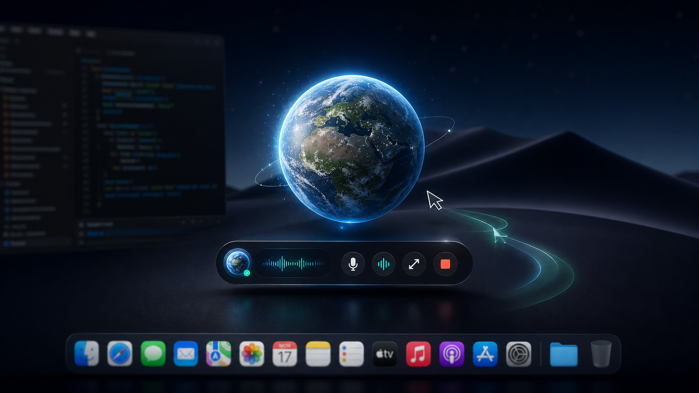

A voice-first AI desktop assistant that lives beside your cursor, listens when you ask, and keeps you in control.
The minibar stays close to the Earth icon: type a command, tap mic, or start live voice mode.
Earth explains each step, shows a second AI cursor, and pauses if you move the real mouse.
Bring OpenAI-compatible APIs, NVIDIA, local models, or your own provider. Improve agents, voice, tools, and safety in public.
Try it, star it, and help shape the open-source AI assistant for macOS.
